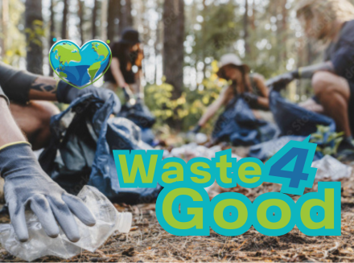
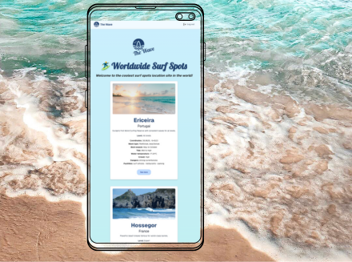
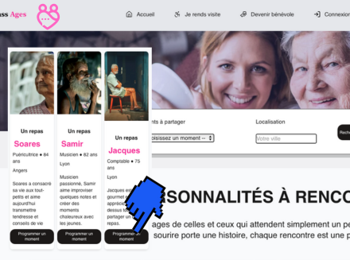
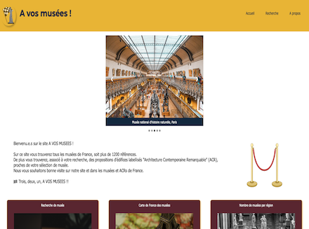
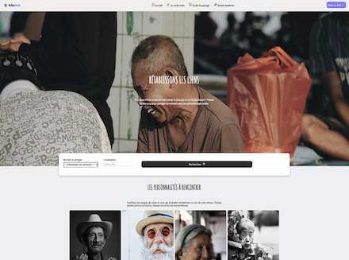
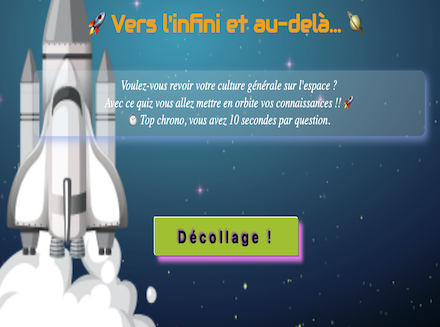
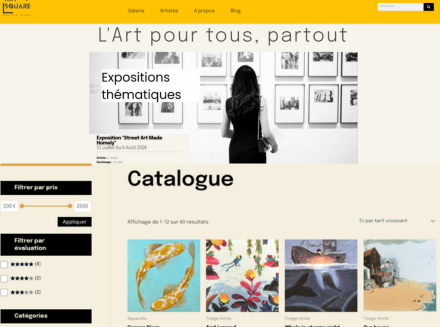
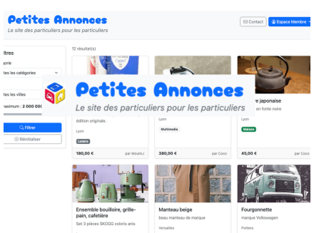

School & Personal Projects

WASTE4GOOD is a volunteer association raising awareness about wild litter collection (cigarette butts, plastic packaging, etc.). Collected waste is converted into points, which are then turned into donations for environmental charities.
Refactoring of an existing school project: implementing new features, secure authentication, gamification, and a complete overhaul of the UX/UI.
Stack: Next.js, Express.js (deployed as Serverless Functions on Vercel), PostgreSQL (Neon), React Leaflet, Tailwind CSS, Bcrypt.
Key Features: Dual interface (volunteers and
administrators), interactive waste collection mapping, analytics
dashboard, volunteer leaderboard, and a gamification engine that
converts the weight of collected litter into points, then into
financial donations for charities.
Challenge Solved: Designing a consistent
gamification system, specifically the backend logic for the
dynamic calculation and conversion of points based on waste
weight.
🚧 Project currently in progress.
Fondu au noir is an interactive and educational Progressive Web
App (PWA) quiz that combines a chronological timeline with
animated flashcards to explore the history of Film Noir. As my
first independent post-school project, it allowed me to master
Vanilla React. A true cinephile, I built this application to
capture and translate the dark atmosphere and unique aesthetic of
this cinematic era, while diving deep into React's core concepts.
Stack & Data: React (Vite), TypeScript, Local JSON (static data structure), Framer Motion, Canvas-Confetti, Vanilla CSS, LocalStorage.
Key Features: Interactive movie cards with a
"Learn More" modal, historical timeline navigation, persistent
score history, and a dynamic recommendation engine based on the
user's success rate.
Challenge Solved: Mastering React's asynchronous
nature and component lifecycle. I intentionally bypassed Next.js
to consolidate my React fundamentals. This involved using a wide
range of native hooks (useState,
useEffect) as well as advanced ones (useMemo
and useCallback for performance optimization, and
useRef to handle modal accessibility and focus). I
also designed a custom useScore hook paired with the
Context API for centralized state management. My biggest hurdles
were crafting a smooth, fluid CSS layout for the interactive
timeline, optimizing and exporting movie posters from Canva, and
configuring a Service Worker from scratch to turn the application
into an installable PWA.

A community platform connecting surfers worldwide. Developed solo as a final graduation project and presented to a panel of industry professionals during the school's "Demo Days". Curious to explore an unfamiliar universe, I chose this school-suggested topic to tackle both a thematic and technical challenge. Built entirely in English.
Stack: Next.js, Express.js (REST API), PostgreSQL (Neon), Prisma (ORM), JWT, Bcrypt, React Leaflet (Lazy Loading), Tailwind CSS.
Key Features: Interactive map of global surf
spots, favorites, responsive design, secure token-based
authentication (JWT), and a three-tier admin dashboard featuring
User, Full Admin, and an innovative read-only "Demo" profile to
safely explore the administration interface.
Challenge Solved: Managing a decoupled
architecture (separated frontend and backend) and optimizing
performance. The initial load time of the map-heavy homepage was
my main bottleneck. Using Chrome DevTools and Lighthouse, I
analyzed key metrics such as CLS (Cumulative Layout Shift). By
implementing lazy loading on the map components and optimizing
backend queries, I raised the Lighthouse performance score to 82.
🚧 In progress: optimizing load times, creating search filters.

An intergenerational matchmaking application designed to combat isolation among seniors. This is a complete and modernized overhaul of Adaence, rebuilt as a dynamic and secure web application featuring advanced filters, secure token-based authentication (JWT), and a functional admin dashboard.
Stack: Next.js (Full-Stack Monorepo), React, TypeScript, PostgreSQL (Neon), Prisma (ORM), NextAuth, Bcrypt, Tailwind CSS, Lucide-react. Methodology: Developed in a two-person team using Agile practices.
Key Features: Advanced search filters (by
activities and cities), interactive application forms, secure
authentication, and an administrator dashboard featuring a full
CRUD system to approve, reject, or create volunteer profiles.
Challenge Solved: My first major full-stack
project. Beyond learning Prisma ORM and Next.js, the greatest
challenge was our introduction to TypeScript. During our first
deployment on Vercel, the lack of strict typing triggered dozens
of complex compilation errors in the build logs. We had to analyze
every error message, understand the compiler's strict logic, and
systematically refactor our types to successfully push the
application to production.

A search and exploration engine for French national museums. This application aggregates open-source data from the data.gouv.fr APIs ("Musées de France" and "Architecture Remarquable"), developed in partnership with the non-profit organization Latitudes. It features data visualization (Dataviz) with interactive charts and maps.
Stack & Tools: JavaScript (ES6), HTML5/CSS3, Open Data APIs (Muséofile & ACR), Leaflet.js, Vercel, Jira.
Methodology: Socially impactful educational project, developed in a team of 4 using Jira and daily stand-up meetings.
Key Features: Multi-criteria search (by region
and theme), interactive map, data visualization charts, and
automatic suggestions of 3 nearby landmarks certified as
"Architecture Contemporaine Remarquable" based on the selected
museum.
Challenge Solved: Our first project manipulating
external APIs. The main challenge was adapting to the diverse
nature of Open Data. We had to learn how to extract data from two
distinct platforms whose querying methods, formats, and data
structures differed completely. We then had to clean, parse, and
cross-reference these data streams to calculate geospatial
proximity, all while managing dynamic map rendering using
Leaflet.js.

A social platform connecting seniors with volunteers to combat isolation through shared activities and social interactions. This is the historical V1 of the project, which served as the foundation for PassAges.
Stack & Tools: Semantic HTML5, CSS3 (Flexbox/Grid), JavaScript (ES6), PostgreSQL (Neon), DrawSQL, Lucide Icons.
Key Features: Dynamic profile filtering (via
URLSearchParams), results pagination, an interactive volunteer
application form with client-side error handling, and dynamic DOM
manipulation.
Challenge Solved: My very first comprehensive
integration project and introduction to databases. Beyond building
a responsive layout with CSS Grid, I designed my first relational
SQL schema from scratch by visually modeling it on DrawSQL
(designing tables, primary keys, and foreign keys). I then wrote
the creation and insertion scripts to link the application to a
PostgreSQL database hosted on Neon.

An interactive quiz focused on space exploration, featuring multiple-choice questions and a dynamic score calculation at the end of the game.
Stack & Tools: HTML5, CSS3, JavaScript (ES6), Canvas-Confetti (CDN), Canva, Trello.
Advanced DOM manipulation and precise handling of native events.
Key Features: Multiple-choice questions, an
interactive progress bar driven by an animated rocket, dynamic
score management, a 10-second countdown timer per question with
automatic transition to the next, and a confetti blast celebration
(Canvas-Confetti) for perfect scores.
Challenge Solved: Our very first group project at
Ada Tech School. The primary technical hurdles involved intensive,
dynamic DOM manipulation in pure JavaScript to link question
progression with the rocket animation, alongside managing
asynchronous flows using a countdown timer for response windows.
Methodology: We worked using
mob programming
(collaborative coding on a shared screen) and structured our daily
workflows via Trello to monitor project advancement.

Independent creation and deployment of an e-commerce platform and online art gallery. Features include artwork sales, promotional discounts, exhibitions, detailed artist biographies, an editorial blog, user accounts, and a shopping cart.
Stack: WordPress, Elementor, WooCommerce, CSS.
Key Features: WooCommerce catalog management,
secure client space, blogging system, and product filtering.
Challenge Solved: My very first live
deployment. I independently managed the domain name purchase,
shared hosting configuration (Nuxit), HTTPS implementation (SSL
certificate), SQL database creation, and the full migration from a
local environment to production.

An online classified advertisements website. Adaptation and refactoring of an older legacy project written in Procedural PHP. Deployed on a Nuxit shared server with a MySQL database. CI/CD: Automated deployment using GitHub Actions.
Stack & Tools: PHP 8 (OOP), MVC Architecture, MySQL, Bootstrap CSS, GitHub Actions.
Key Features: Full CRUD management (ads,
categories, users, comments), secure client area, administration
dashboard and comment moderation.
Challenge Solved: Complete refactoring of an
Ifocop school project originally built with Procedural PHP. I
migrated the entire codebase to a clean, Object-Oriented (OOP) MVC
architecture to secure it (using prepared SQL statements) and make
it scalable.
The main hurdle was managing the full
production release on a Nuxit shared server: I configured an
isolated subdomain, provisioned and linked the remote MySQL
database, and set up an automated CI/CD pipeline with GitHub
Actions, successfully eliminating manual FTP deployments.